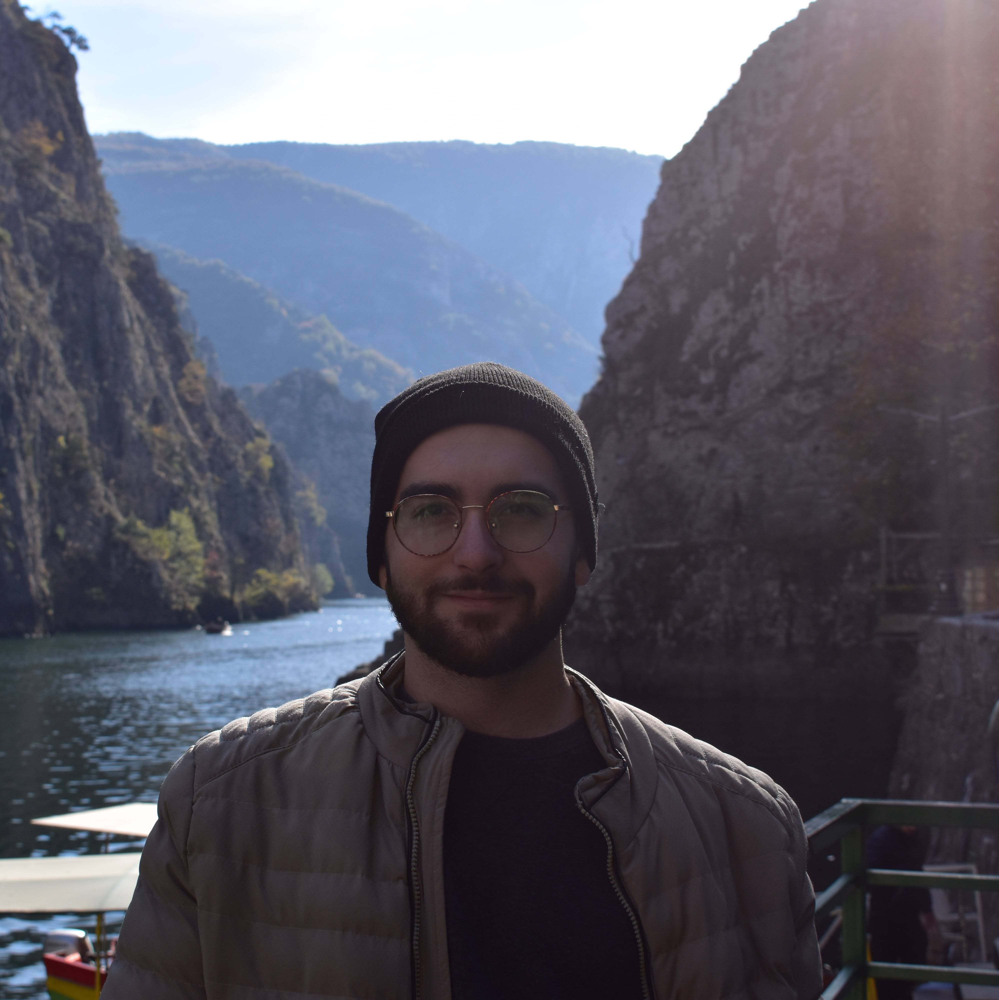

Sensing the Earth through
Quantum Optics.
Hi, I'm Daniele Caruana. I research quantum optical systems and work on sensing technologies for applied geophysics at UoM.

About Me
I am an MSc research student in Quantum Optics with the University of Malta's Quantumalta Group, working under the supervision of Prof. André Xuereb.
Currently, I am working as a Research Officer in Project SENSEI, where my focus is on developing metrological and signal processing techniques tailored for geophysical applications. I also work as a teaching assistant and laboratory demonstrator for undergraduate Experimental Physics modules.
More generally, my interests lie at the intersection of sensing technologies, quantum-enhanced optics, and instrumentation design. I am fascinated by how these frameworks can be deployed across diverse industries and research horizons—spanning everything from fundamental physics and geophysics to unexpected, interdisciplinary fields like archaeology, which I find, frankly, really cool.
Publications
Academic papers, conference abstracts, and ongoing research.
Assessing the Seismic Sensitivity on a Submarine Optical Fiber Link between Malta and Catania (Sicily, Italy)
D Caruana, M Agius, A Xuereb, C Clivati, S Donadello, K Grixti, I Schulten (2026)
Second Research Paper Title
Your Name (2025)
Brief details about computational modeling methodologies used.
Read Paper →Second Research Paper Title
Your Name (2025)
Brief details about computational modeling methodologies used.
Read Paper →Research Toolkit
A multidisciplinary stack spanning quantum simulation, theoretical physics, and electronics modelling.
Computational
Physics & Optics
Engineering
Experience & Education
A chronological path through my academic research milestones and technical engineering roles.
MSc in Physics
University of Malta
Thesis: Quantum Non-Reciprocity in Interferometric Systems.
Lab Demonstrator & Teaching Assistant
University of Malta
Lab demonstrator and TA for Experimental Physics modules in undergraduate Physics courses.
Research Officer | Project SENSEI
University of Malta
Designing and implementing signal analysis solutions for fiber-optic geophysical sensing.
Research Assistant
University of Malta (Electromagnetics Research Group)
Performed preliminary data analysis for research on microwave electromagnetic monitoring of blood parameters using dielectric properties as potential clinical biomarkers.
Junior Assistant | Data Engineer
Malta Financial Services Authority
Automation and analysis of financial data regulation.
Lab Assistant (Internship)
University of Malta (Electromagnetics Research Group)
Prepared and measured lab-grade fluids and biological mimics for biomedical applications.
Junior Business Analyst (Internship)
Insignia
Conducted quality assurance for mobile and web applications in the finance and luxury credit card sectors.
Open Resources
Supplementary materials, open data repositories, and seminar slides from my research projects.